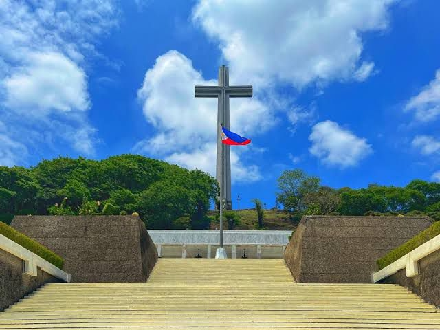
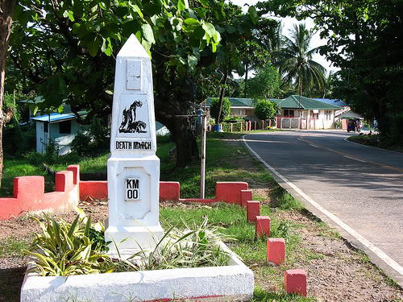

Mt. Samat National Shrine
The Mt. Samat National Shrine, also known as the Dambana ng Kagitingan (Shrine of Valor), is a historic memorial in Pilar, Bataan, built to honor the bravery of Filipino and American soldiers during World War II. Its centerpiece is the 92‑meter Memorial Cross, one of the tallest in the world, symbolizing sacrifice and resilience
Learn More →
Zero Kilometer Marker
The Bataan Death March Markers commemorate the two starting points of the infamous march in April 1942—one in Mariveles and another in Bagac—where Filipino and American soldiers were forced to begin their harrowing 60‑mile trek under Japanese captivity. These markers serve as solemn reminders of sacrifice, suffering, and resilience
Learn More →
Surrender Site Marker
The Surrender Site Marker in Bataan commemorates the exact location where the formal surrender of Filipino and American forces to the Japanese took place on April 9, 1942, after the fall of Bataan.
Learn More →